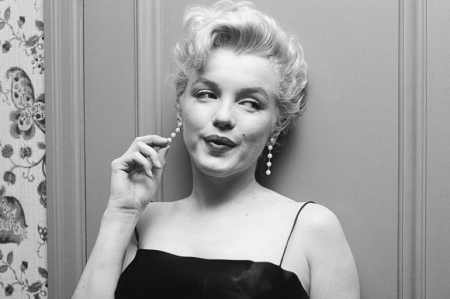
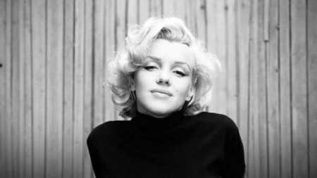
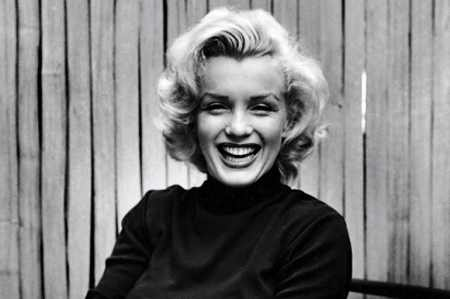
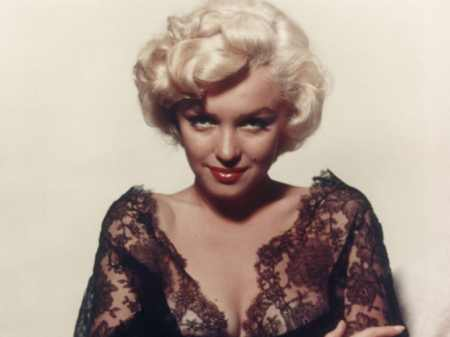

Слава цієї жінки не давала спокою її сучасникам. Легенди про неї складають і через багато років після смерті. Так ким же була насправді Мерлін Монро, уроджена Норма Джин Бейкер?
Дитинство майбутньої зірки
Біографія Мерлін Монро (Norma Jeane) яскрава і неоднозначна. Вона з’явилася на світ в одній з міських лікарень багатомільйонного Лос Анжелеса рано вранці. Ще в пологовому відділенні її мати, Гледіс, повідомила лікарям наступну інформацію: вона не знає, хто батько новонародженої дочки. Доктора в картці записали дитину як Норму Джин Мортенсен.
Чому ми згадали ім’я матері майбутньої зірки? Якщо пригадати, що писали про Мерлін в її час; шанувати, за що переживала вона сама, то можна зрозуміти: Монро завжди боялася психічних розладів. Пов’язано це було з сімейними легендами (частина з яких мала під собою реальні підстави). Дідусь Норми Джин помер від органічного ураження головного мозку, який став наслідком сифілісу.
Бабуся майбутньої зірки також не відрізнялася добропорядністю. Після смерті чоловіка вона міняла чоловіків, виправдовуючись необхідністю влаштувати особисте життя. Навіть мати Норми Джин, Гледіс, вона фактично кинула напризволяще в 14-річному віці, просто видавши заміж. Зняла з себе відповідальність за виховання дочки, віддавши її чоловікові. Зрозуміло, що та Норма Джин виросла в тих умовах, де в сім’ї не могло існувати певних засад і цінностей.
Коли дівчинці виповнилося два тижні від роду, бабуся Делла переконала Гледіс віддати доньку на виховання в прийомну сім’ю. Вітряна Гледіс погодилася тут же: вона сама не була готова взяти на себе тягар матері. Так дівчинка Норма Джин опинилася в сім’ї Болендеров, які заробляли на виховання чужих дітей. За сучасними мірками це був дитячий будинок сімейного типу.
Особливої любові прийомні батьки до дітей не мали, але ставилися до них добре і давали все необхідне. В сім’ї Болендоров майбутня секс-бомба провела перші сім років свого життя. У своїх спогадах вона писала, що виховували її суворо, під постійними заборонами і страхами.
Прийомна мати не особливо любила Норму. Вона вважала, що дівчинку надто мовчазною, прихованої і нерозумної. Під час одного пасхального торжества всіх діток в сім’ї Болендоров одягли в темні куртки. Під ними були світлі вбрання. По команді, в певний момент, всі повинні були скинути темні туніки. Одна Норма Джин «забарилася» і не зробила цього.
Надалі вона згадувала, що виявилася єдиним «темною плямою» на святі життя. Цей випадок надовго запам’ятала прийомна мати, яка при першому зручному випадку вмовляла чоловіка віддати «мовчазна істота, яка нервує».
Коли Нормою Джин виповнилося сім років, прокинулися материнські почуття у рідної матері – Гледіс. Не можна сказати, що до цього вони не спілкувалися. Але якщо раніше їх побачення були періодичними недільними зустрічами, то зараз Гледіс вирішила назавжди забрати дівчинку від прийомних батьків і зайнятися вихованням сама.
Мати майбутньої зірки працювала на «фабриці мрій». Норма Джин згадувала про подругу матері Гледіс, Грейс, яка стала на час для неї ще однієї прийомної сім’ї.
Грейс також працювала на «фабриці мрій». Вона була близько знайома з багатьма акторами того часу. Саме Грейс «посіяла» в голові у дівчинки думка про те, що та повинна стати кінозіркою.
Життя Норми Джин в сім’ї опікунки мала і свої «темні плями». Чого варта історія, коли її в 11-річному віці спробував зґвалтувати вітчим. І це був не одноразовий випадок. У 12 років та ж історія повторилася з власним неповнолітнім двоюрідним братом. На щастя, обидві спроби виявилися невдалими: дівчинці вдалося втекти.
У 14 років Норма Джин вперше зрозуміла, що з незграбної дівчинки перетворилася на спокусливу маленьку жінку. Її округлі форми привертали увагу багатьох чоловіків. А в школі Нормі дали прізвисько «Дівчина М-м-м».
Саме раніше дозрівання в деякій мірі «зіграло на руку» дівчині. Адже в 16 років вона поспішила вийти заміж за друга Джима Доуґерті. Любила вона його? Швидше це була вимушена міра: не вийшовши заміж, Норми Джин довелося б прожити в притулку до свого 18-річчя. А в старшому одного вона побачила партнера, порадника і кращий варіант. Так закінчилося дитинство.
Робота моделлю
Норма Джин не була зразковою дружиною. Їй лестило увагу багатьох чоловіків. Це важко переживав чоловік Джим, який не раз просив вести себе пристойно. Але хто б його слухав? Коли в 1944 році на фабрику, де працювала майбутня зірка, приїхала група фотографів для зйомки репортажу про жінок, які трудяться на благо країни, Норма Джин скористалася моментом. І в подяку за чоловіче захоплення її зовнішністю, переспала з деякими з гостей. Цього їй не пробачив чоловік, негайно подавши на розлучення.
У 1946 році Норма Джин приїхала до Голлівуду. Підкорення «міста мрій» почалося з роботи моделлю в стилі «пін-ап»: дівчат фотографували, з фото робили малюнок, розфарбовували його, додавали деталі і отримували плакати і малюнки, якими ілюстрували журнали і книги.
Дуже скоро Норма Джин стала улюбленою моделлю художника Ерла Морана, з яким пропрацювала чотири роки. Він захоплювався її природною красою, а вона «розкривалася» як артистична натура. Вже в 1946 році фотографії дівчата прикрашали більш ніж тридцяти обкладинок журналів. Саме тоді ж вона підписала свій перший контракт зі студією «20 століття Фокс», взявши собі псевдонім Marilyn Monro. Згідно з умовами договору, дівчину зобов’язали перефарбувати волосся в білий колір. Саме вони і стали візитною карткою актриси.
Перший успіх в кіно
У 1950 році на екрани вийшов фільм «Асфальтові джунглі». Стрічка принесла гарні гроші творцям, і навіть номінувалася по 4 категоріях на премію «Оскар». Нагороди не отримала жодної, але стала візитною карткою для юної актриси Мерлін Монро. У цьому фільмі у неї була епізодична роль. Втім, як і у багатьох інших.
Режисери бачили в молодій жінці гарненьку актрису другого плану. Спочатку це не засмучувало актрису: зйомки в епізодичних ролях не вимагали багато часу. А це давало можливість зніматися одночасно у багатьох проектах, заробляючи непогані гроші.
Слава до Мерлін Монро прийшла після виходу на екран музичного фільму «Джентльмени віддають перевагу блондинкам». Цікавий той факт, що за зйомки у фільмі актриса отримала гонорар всього 11.5 тис. дол. В той час, як її «напарниці» Дейн Рассел заплатили у вісімнадцять разів більше. А через два роки продюсери вирішили зняти продовження фільму під назвою «Джентльмени одружуються на брюнетках», куди вже не запросили зніматися співачку і актрису Мерлін. Фільм із тріском провалився.
Найпопулярніші кіноролі
Якщо про «джентльменів», які віддають перевагу блондинкам, ми вже згадували, то п’ятірка інших топових фільмів з участю Мерлін Монро виглядала б так.
- «Як вийти заміж за мільйонера» – історія трьох подруг, які мріють вдало вийти заміж. У пошуках мільйонерів вони знімають квартиру і відправляються на ловлю женихів. Жодна з них заміж за принца» так і не вийшла, а от перед вибором: гроші чи любов — довелося опинитися кожній.
- «Сверблячка сьомого року» – ця стрічка відома своїм кадром, де поривом вітру спокусливо підводиться повітряна спідниця актриси. Особливої популярності фільм не придбав, але ось цей кадр увійшов в історію на довгі десятиліття.
- «У джазі тільки дівчата» – забавна комедія з перевтіленням героїв-чоловіків жіночі образи, любовною лінією солістки джаз-бенду і одного з героїв. Є багато музики і прекрасна гра акторів.
- «Займемося любов’ю» – знаменита стрічка з участю Іва Монтана. Відомий мільярдер дізнається, що повинен стати героєм вистави, в якому буде висміяний його образ. Він йде розбиратися в театр, де закохується в гарненьку актрису. Щоб домогтися її розташування, прикидається актором, який повинен зіграти роль мільярдера.
- «Неприкаяні» – це остання стрічка Мерлін Монро і Кларка Гейбла. Сценарій фільму був написаний чоловіком актриси, Артуром Міллером, спеціально для неї. Цікавий факт, що Кларк Гейбл відгукувався про зйомки з Мерлін в дусі «вона мене довела до інфаркту». Через 11 днів після закінчення зйомок актор дійсно помер від серцевого нападу.
Мерлін Монро: секс символ 20 століття. Особисте життя
Особисте життя кіноактриси оповита міфами і таємницями. Їй приписують не тільки безліч шлюбів, але і романи з найвідомішими співвітчизниками того часу. Про першого чоловіка, Джимі Доуґерті, ми вже згадували. Не зумівши пережити велелюбність молодої дружини і прагнення до слави, він подав на розлучення.
У 1954 році актриса вийшла заміж вдруге. Чоловіком став Джо Ді Маджіо. Як сьогодні прийнято говорити, цей шлюб став союзом «на прохання глядачів»: продюсери актриси вирішили, що, видавши заміж Мерлін за відомого бейсболіста, піднімуть рейтинги серед громадян країни. Так воно і сталося: ця пара стала однією з найулюбленіших у американців. Примітно, що бейсболіст справді щиро любив Монро все життя. І саме він після її смерті взяв на себе всі клопоти, пов’язані з похоронами.
Третій шлюб акторки стався зі знаменитим драматургом Артуром Міллером. Кажуть, що цю пару пов’язували розрахунок і пристрасть одночасно. Міллеру лестило мати біля себе таку красуню-дружину, а Мерлін сподівалася на заступництво і наставництво Міллера.
Але вже незабаром їх відносини зіпсувалися: Артура почала дратувати не зовсім інтелектуальна блондинка, а Монро обтяжувала холодність чоловіка. Незабаром вона потрапила з нервовим зривом на лікування в психіатричну лікарню.
Крім офіційних шлюбів, у актриси було безліч романів з відомими людьми. Серед коханців значився Ів Монтан і Джон Кеннеді. З Монтаном Монро була болюча зв’язок, при якій жінка страждала: актор не палав особливою пристрастю до Мерлін, прямо заявляючи, що ніколи не кине дружину.
Хвороблива любов була у Монро і з Джоном Кеннеді. Потай актриса сподівалася, що зможе посунути першу леді країни. У той період Мерлін переживала не кращі часи, запиваючи все алкоголем і «заїдаючи» антидепресантами. Її поведінка часто було неадекватним. Після одного зі скандалів з Кеннеді, коли актриса погрожувала розповісти світу всі подробиці роману з президентом, жінку знайшли мертвою.
Таємниця смерті
За офіційною версією, актриса померла від передозування пентобарбіталу, якого після розтину в її організмі… не знайшли. У той же час, друзі, з якими Мерлін розмовляла по телефону за кілька годин до своєї смерті, стверджували, що вона була під дією наркотиків. Також відомо, що 8 серпня 1962 року актриса збиралася знову вийти заміж за бейсболіста Джо Ді Маджіо.
Усім журналістам і знайомим, які наважилися припустити, що в смерті актриси замішана президентська сім’я, швидко закривали роти. На місце події поліція була викликана не відразу. Справу про смерть актриси зайняло 29 сторінок і було закрито за офіційною версією «самогубство».
Цікаві факти
Кілька маловідомих фактів з життя актриси.
- Спочатку жінка хотіла взяти собі псевдонім Жан Адер.
- Під час Другої світової війни дівчина працювала на заводі, де займалася фарбуванням літаків і перевіркою парашутів.
- Перший номер журналу «Плейбой» прикрашала обкладинка з Мерлін Монро.
- Режисери стверджували, що актриса дуже погано запам’ятовувала тексти і часто плуталася. Доводилося робити по кілька десятків дублів.
- У актриси було кілька пластичних операцій: на підборідді, носі і грудей.
- Хоча багато хто вважав актрису «дурною блондинкою», Мерлін дуже багато читала і вільний час присвячувала самоосвіти.
- Хоча багато хто вважав актрису «дурною блондинкою», Мерлін дуже багато читала і вільний час присвячувала самоосвіти.
Слава – завжди важке випробування. Не кожен чоловік здатний її пережити з гідністю. Психіка слабкої жінки з цим не впоралася. Мерлін Монро померла у віці 36 років.